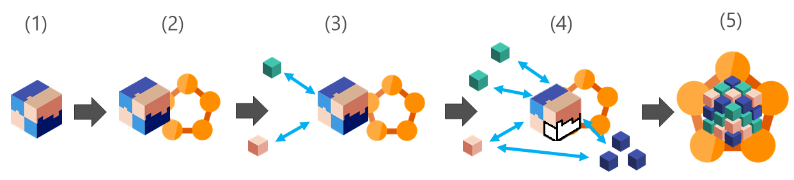
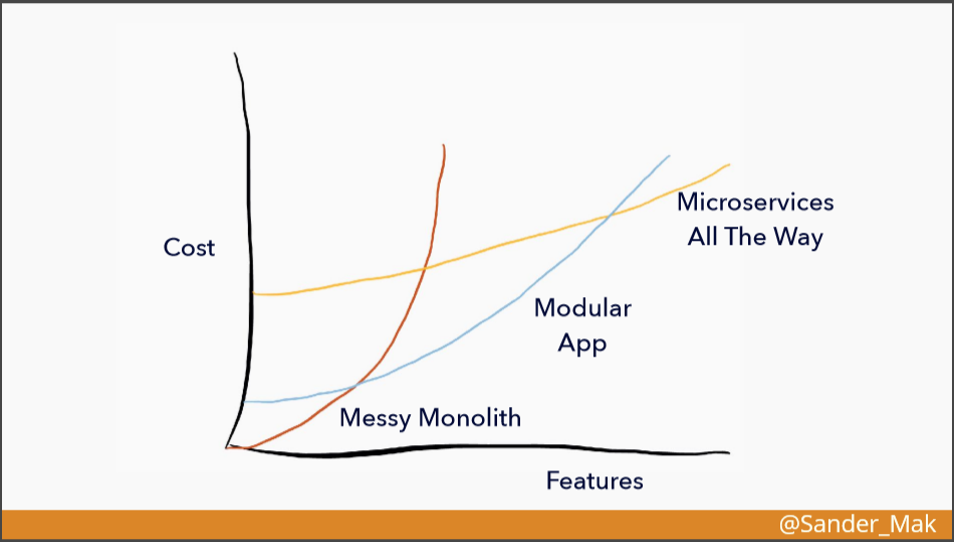
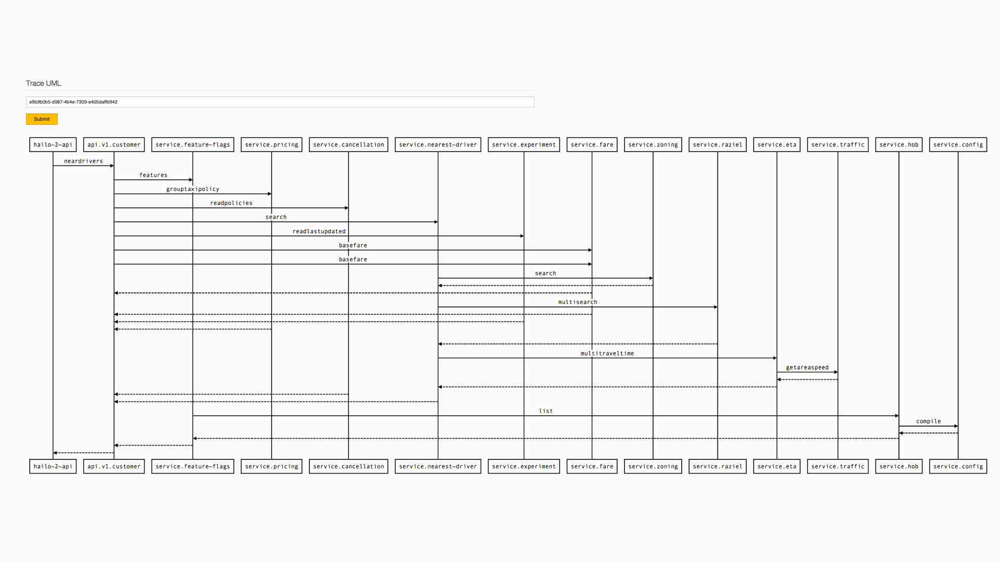
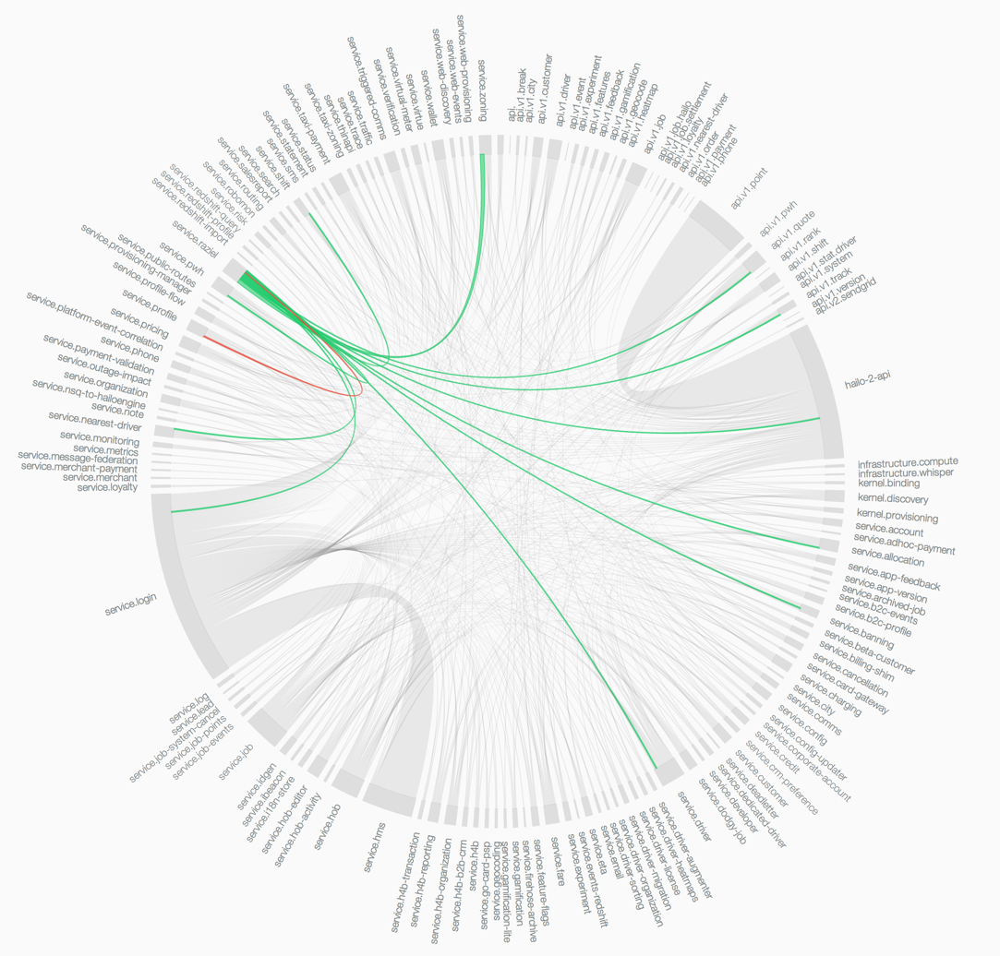
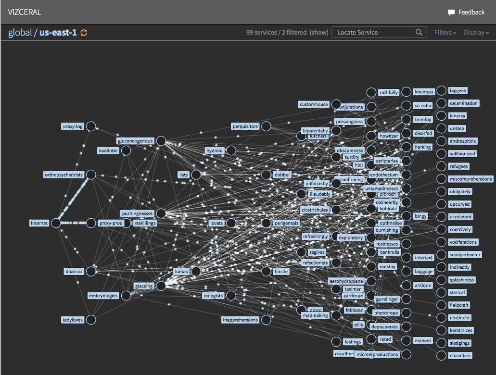

Breaking up the Monolith
It's not all unicorns and rainbows

Marcin Juraszek
Senior Software Engineer @ Microsoft
- http://marcinjuraszek.com
- @mmjuraszek on Twitter
- MarcinJuraszek on GitHub
Microservices Architecture
An architectural style for building software solutions as a network-based system of modular services organized by business domains in order to improve the application’s evolvability, deployability, composability, scalability, resiliency and replaceability
Mike Amundsen, Matt McLarty, Ronnie Mitra, Irakli Ndareishvili. Microservice Architecture: Aligning Principles, Practices, and Culture.
The dream
- Identify business scenario aka 'a problem'
- Form a team
- Design the API
- Choose language and framework
- Write, test, deploy and scale
- PROFIT!!!
The reality
The Monolith!
Breaking up the monolith
https://docs.microsoft.com/en-us/azure/service-fabric/service-fabric-overview-microservices
Why?
- Architectural design
- Code coupling
- Engineering velocity
- Deployments
- Testing
- Live-site
- Scaling
- Team satisfaction
Disclaimer
I'm not oposed to microservices
or breaking up monoliths!
Disclaimer #2
My background:
- .NET
- Azure Service Fabric
- Microsoft ;)
The Cost
'Modules or microservices?' by Sander Mak at The O’Reilly Software Architecture Conference, NY 2017
Where is that cost?
Architectural design & Code Coupling
Technical Sprawl
languages, frameworks, communication protocols, tools, dashboards
The only way to cut down on technical sprawl is through standardization at every level of the microservice ecosystem.
Fowler, Susan J. Production-ready Microservices: Building Standardized Systems Across an Egineering Organization.
Cross-service communication
var result = Method(arg1, arg2);Performance, reliability
, security, debugging,
service discovery
, telemetry
Engineering velocity
Testing
test granurality, API changes
Deployments
Continuous Deployments, parallel deployments, homogeneous environments,
standing up new environments
Live-site
Who do you call when something goes wrong at 3AM?
Options
- Call the owner of the first failing microservice
- Call the owner of all the failing microservices
- Pinpoint the broken microservice(s), call the right owner(s)
Telemetry
Request tracing, service dependencies,
service health and performance, network traffic
Request tracing
https://sudo.hailoapp.com/services/2015/03/09/journey-into-a-microservice-world-part-3/
Service dependencies
https://sudo.hailoapp.com/services/2015/03/09/journey-into-a-microservice-world-part-3/
Network traffic
https://github.com/Netflix/vizceral
Network traffic
https://github.com/Netflix/vizceral
Scaling
Team satisfaction
Culture change
Suggestions
Long-term investment
Evolution, not revolution
Processes
Ship the monolith faster first!
- CI/CD
- Automated testing
- Telemetry
Start with something that's not critical
Move to more critical things later
Move/Split for the sake of splitting does very little sense
It has to be so much better, that people will want to move organically